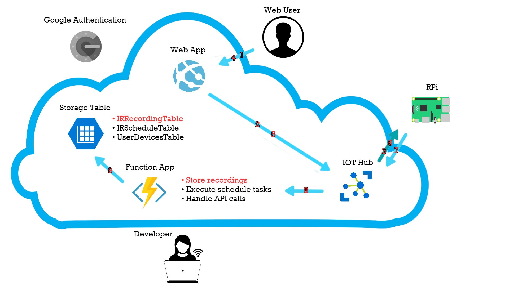

IRPi
The Universal IoT IR Remote.
What is IRPi?
IRPi is a universal IoT IR remote based on Raspberry Pi. It allows you to control any IR-based device such as TVs, set-top boxes and air conditioners. IRPi controls mulitple devices from the cloud using a simple and intuitive interface.
Demo
Youtube Video
Features
- Record and Transmit any IR signal
- Control your device through a mobile-friendly website
- Manage multiple Raspberry Pi's from the cloud
- Set timers for future remote commands
- Access manually through easy HTTP Requests
Putting the IR in IRPi
IR (Infra red) is a light wave with a longer wavelength than red light - this makes it invisible to the human eye. Since many day-to-day objects naturally emmit IR signal, IR remotes/receivers don't simply emmit and record IR; they use a unique protocol. Only when the transmitter modulates IR at a 38Khz frequency, the receiver detects a 'low' signal. This can be explained simply by the following diagram.

In order to read and transmit IR codes, we used the GPIO library provided by microsoft. It allows a user to read and write to the GPIO pins on the RPi.
Since we worked with Windows 10, which is not a real time operating system, this part was quite challenging. As explained earlier, to recive and transmit IR codes there is a need to change from high to low voltage in a 38kHz frequency. Altough the RPi is fast enough, the operation system often stops the code in order to maintain itself. Therefore our naive attempts to obtain an accurate and reliable 38kHz rate failed and we had to find smarter solutions.
For reading signals, the IR reciver outputs 'high' or 'low' voltage based on the IR frequency as showen in the last diagram. We used the GPIOChangeReader class which places timestamps in kernal mode then later read from the device in user mode, this allows to record fast changes in the IR receiver signal.
Transmitting was a bigger challenge for us. For that purpuse we used a '555 timer' connected to the IR LED on our breadboard. The '555 timer' modulates a 38kHz frequency, and we use the GPIO to enable or disable the timer. The output of the timer is connected to the IR LED.
Building the IRPi
The universal remote is built from the following- a Raspberry Pi 3, an IR receiver and an IR transmitter (LED). The IR LED is connected to a 555 timer that modulates a 38kHz frequency. It also contains a green* LED for debugging and a pushbutton to accept input. The following diagram shows the wiring of the IRPi:
* Don't use a red LED for debugging! It might interfere with the IR receiver.
Communication with the cloud
Our project's communcation is done through several cloud services provideed by Microsoft Azure. The main parts are:
- Azure App Service - Web App
- Cloud Storage - Azure Storage Table
- Azure Functions
- IoT Hub
The following diagram explains the interactions between these services:

IoT Hub
IoT Hub is a service that was designed for IoT device connectivity, and this is the main reason for choosing this exact service. The IoT Hub provides per-device identity and revocable access control, which is crucial for IoT in general and particulary for IRPi - we have to ensure that the users are safe, or else a hacker can contol frequently used item in the victim's house or houses. IoT Hub is also optimized for scaling, can support millions of simultaneously connected devices. This is a big part of IRPi, the goal is to let everyone control every IR device from anywhere.
Web App
Azure suggests few options for hosting websites: App Service, Cloud Service, Virtual Machine, and Service Fabric. We chose to use App Service as it fits our goals best - it allows quick deployment and handles scaling. In the following paragraph we describe the main pros and cons for each option.
App Service - This service handles scaling and load balancing. It also allows quick deployment and is relatively easy to use. This service does not allow remote desktop access. If one wish to start using an App Service for an existing site, small changes might be needed.
Cloud Service - This is a legacy service and it's recommended not to use it in new projects.
Virtual Machine - The main advantage of a Virtual Machine is that you can take a local project and upload it 'as is'. But as this is a Infrastructure-as-a-Service (IaaS) and not a Platform-as-a-Service (Paas), maintenance is needed. Therfore for a new projects PaaS is preferred.
Service Fabric - This service is similar to App Service, it makes scaling and load balancing easy, and allows quick deployment. Service Fabric also allows more direct controll over the underlying infrastructure. This service is relatively new.
Service Fabric also offers the features we need, but we don't need the control over the underlying infrastructure and preferred to work with a service that exists for a longer time.
Deeper overview can be found here.
Azure Functions
Azure Functions are a strong tool given by Azure. They allow to run short pieces of code without building an application or infrastructure around them.
When using Azure Functions, there are 2 possible types of pricing plans:
- Consumption plan - pay for the time your code runs.
- App Service plan - run your Azure Functions on the infrastructure used for an existing App Service with no additional cost.
We have coded 3 Azure Functions:
Store recordings - This function is triggered when a D2C (Device to Cloud) message arrives to the IoT Hub. The function parses the message and insert it to an Azure Storage Table named IRRecordingTable.
Execute schedule tasks - This function is triggered once a minute. For any message in the Azure Storage Table named IRScheduleTable, it checkes wheter it should be transmitted now, and if so the function invokes a corresponding direct method.
Handle API calls - This function is triggered when an HTTP Post request is sent to it's URI. It handles requests that contain the following parameters: DeviceID, ProductName and ActionName. For any such request it reads the wanted IR message from IRRecordingTable and invokes a direct method for the relevant device.
Azure Storage Table
There are two main databases that Azure provides, these are Azure Storage Table and SQL Azure. SQL Azure is great for when you want to work with structured data using relations, indexes, constraints, while Azure Table Storage is great for centralized structured data without relations. Each row in an Azure Storage Table is unikly defined by a PartitionKey and a RowKey, they're also used for physically partitioning the tables, which provides load balancing and scalability.
We chose to work with Azure Storage Table rather than SQL Azure because of the load balancing and scalability factor and also because it is much cheaper when you work with bulk storage.
Communication examples
Trasnmit
The following diagram explains what happens when a web user clicks on a transmit button:
- A GET request is sent to the Web app sufficient info to know which IR message the user clicked on.
- The Web app asks the Storage Table for the appropriate IR message in the IRRecordingTable with the information from the GET request.
- The Storage Table retrievs the IR message and sents is back to the Web app.
- The Web app invokes a direct method which tells the IoT Hub which device should transmit and what message.
- The IoT then communicates with the chosen device and forwards him the IR message to transmit.
Record
The following diagram explains what happens when a web user wishes to record a new message:
- The web user chooses a device, product name and action name and then clicks a button to start recording. After the click, a GET request is sent to the Web app with the device ID.
- The Web app then invokes a direct method which tells the IoT Hub which device should start recording.
- The IoT communicates with the chosen device and tell it to start recording.
- When the web user wishes to end the recording, he presses the appropriate button. This sends a GET request to the Web app with the device ID, product name and action name as parameters.
- The Web app then invokes a direct method which tells the IoT Hub which device should stop recording. It also forwards the product name and action name chosen by the web user.
- The IoT then communicates with the chosen device and tells him to end the recording and gives him the rest of the parameters.
- The chosen device sends a D2C message with the recording, product name and action name.
- An Azure Function listens to messages from endpoint devices. When a D2C message is sent from a device the Azure Function handles it.
- The Azure Function inserts a new item to IRRecordingTable with the given IR message, product name, action name and device ID.
Schedule
The following diagram explains the proccess of making a shedule and auto executing it:
This is what happens when a web user wishes to schedule a new message:
- The web user chooses a message to schedule and then sets a trigger time for when it should be trasmited. After a click on the submit button a GET request is sent to the Web app with the appropriate parameters.
- The Web app adds a new row to the IRScheduleTable with the information from the GET request.
The following proccess is automatic and runs as an Azure Function every minute:
- The Azure Function asks for the information stored in IRScheduleTable.
- The Storage Table retrievs the desired table and sends it back to the Azure Function.
- For every message in the table that its schedule time arrived, the Azure Function ivokes a direct method to tell the IoT Hub which device should transmit and what message.
- The IoT then communcates with the chosen device and forwards him the IR message to transmit.
API
As time goes by, more and more devices contain computers. The vision behind IoT is to allow communication between all of our devices. It becomes more common for new devices to be controlled by comupters that are connected to the internet. Yet, some important daily devices are still being controlled by an IR remote. Using the API you can now controll those IR devices via simple HTTP requests.
How to use the API
In order to use the api, all you need is to send a POST request to the following URL:
https://irpihandlemessages.azurewebsites.net/api/HttpGET-HandleApiCalls
The request should contain the following parameters: DeviceID, ProductName, ActionName. These can be found on the website.
For example, here is a short python code that samples the weather (from OWM, openweathermap.org) and turns on the air conditioner if the temperature is below 20°.
import pyowm import requests import json from time import gmtime, strftime, sleep owm = pyowm.OWM('XXX') # Connecting to OWM, place a valid free key instead of XXX location = 'Tel Aviv,isr' url = 'https://irpihandlemessages.azurewebsites.net/api/HttpGET-HandleApiCalls' # API's url turnOnData = # Building the data of the post request {'DeviceID' : 'MainDevice', 'ProductName' : 'aircon', 'ActionName' : 'on' } while True: print("Checking weather in " + location + " " + strftime("%Y-%m-%d %H:%M:%S", gmtime())) # Access the temperature using the pyowm lib observation = owm.weather_at_place(location) w = observation.get_weather() temperature = w.get_temperature('celsius') print (temperature) if(temperature['temp'] < 20): r = requests.post(url, data = json.dumps(turnOnData)) # Send a post requset the turns on the air conditioner print(r.text) # Print result else: print("Don't turn on aircon") sleep(60)
How the API works
We've written an Azure Function App that handles the API requests. When a request arrives, the function reads the IR message from the Azure Table and then invokes a direct method similarly to the example from the Communication with the cloud section.
Source & Documentation
Link to GitHub
Miscellaneous
Security
The dream of IoT to become part of every device in our houses can become a nightmare if we won't take care of security. As this is a prototype project, we did not provide full security. On the other hand, we did note the steps that should be taken to add security and took them into account while working on other fronts.
We used Azure Authentication for App Services to create a friendly login (with google accounts) and made sure that inner pages can only be accessed by verified users. Furthermore, we turned on the data encryption in the Azure Storage Tables.
We believe that the next security concern that needs treatment is to change the way we identify devices. Instead of giving any device a name, we should have a long random key for each device, then we can ask for this key on requests to invoke a direct methods. We should also add timestamps for this requests to avoid replay attacks.
Scaling
The ability to scale is an important property that might be hidden when the project is in the 'Proof of Concept' stage. However, the entire structure of our project is built to allow scaling. Through the Communication with the cloud section, the explenations behind our choices convince that we used the right tools to allow Azure take care of the scaling for us.
Timezones
Don't know if you noticed, but we went the extra mile and implemented the user timezone inside the scheduling proccess. The schedule table stores the trigger time in respect to GMT +00:00, this means that when we insert and retrieve items to and from the table we must do it with respect to the user's current timezone.